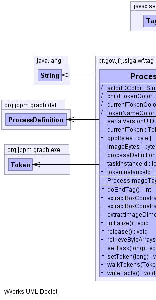
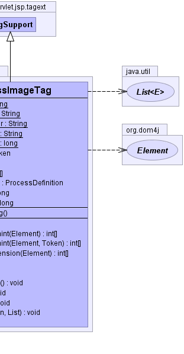

javax.servlet.jsp.tagext.TagSupport
br.gov.jfrj.siga.wf.tag.ProcessImageTag
javax.servlet.jsp.tagext.TagSupport
br.gov.jfrj.siga.wf.tag.ProcessImageTag
|
|||||||||
| PREV CLASS NEXT CLASS | FRAMES NO FRAMES | ||||||||
| SUMMARY: NESTED | FIELD | CONSTR | METHOD | DETAIL: FIELD | CONSTR | METHOD | ||||||||
java.lang.Object
public class ProcessImageTag
Classe que define a tag de exibição do gráfico do process definition através da tag wfImage.
|  |  |
| Field Summary | |
|---|---|
(package private) static java.lang.String |
actorIDColor
|
(package private) static java.lang.String |
childTokenColor
|
private org.jbpm.graph.exe.Token |
currentToken
|
(package private) static java.lang.String |
currentTokenColor
|
private byte[] |
gpdBytes
|
private byte[] |
imageBytes
|
private org.jbpm.graph.def.ProcessDefinition |
processDefinition
|
private static long |
serialVersionUID
|
private long |
taskInstanceId
|
private long |
tokenInstanceId
|
(package private) static java.lang.String |
tokenNameColor
|
| Fields inherited from class javax.servlet.jsp.tagext.TagSupport |
|---|
id, pageContext |
| Fields inherited from interface javax.servlet.jsp.tagext.IterationTag |
|---|
EVAL_BODY_AGAIN |
| Fields inherited from interface javax.servlet.jsp.tagext.Tag |
|---|
EVAL_BODY_INCLUDE, EVAL_PAGE, SKIP_BODY, SKIP_PAGE |
| Constructor Summary | |
|---|---|
ProcessImageTag()
|
|
| Method Summary | |
|---|---|
int |
doEndTag()
Processa a tag. |
private int[] |
extractBoxConstraint(org.dom4j.Element root)
Extrai os limites da caixa para que seja desenhada a marcação à sua volta. |
private int[] |
extractBoxConstraint(org.dom4j.Element root,
org.jbpm.graph.exe.Token token)
Extrai os limites da caixa para que seja desenhada a marcação à sua volta. |
private int[] |
extractImageDimension(org.dom4j.Element root)
Extrai as dimensões da imagem. |
private void |
initialize()
Inicializa a tag |
void |
release()
Libera os recursos quando a tag passar para release state. |
private void |
retrieveByteArrays()
Lê as informações referentes ao gráfico da definição do processo. |
void |
setTask(long id)
Define a task. |
void |
setToken(long id)
Define o token. |
private void |
walkTokens(org.jbpm.graph.exe.Token parent,
java.util.List allTokens)
Pega todos os tokens. |
private void |
writeTable()
Desenha um quadro sobre a tarefa atual. |
| Methods inherited from class javax.servlet.jsp.tagext.TagSupport |
|---|
doAfterBody, doStartTag, findAncestorWithClass, getId, getParent, getValue, getValues, removeValue, setId, setPageContext, setParent, setValue |
| Methods inherited from class java.lang.Object |
|---|
clone, equals, finalize, getClass, hashCode, notify, notifyAll, toString, wait, wait, wait |
| Field Detail |
|---|
private static final long serialVersionUID
private long taskInstanceId
private long tokenInstanceId
private byte[] gpdBytes
private byte[] imageBytes
private org.jbpm.graph.exe.Token currentToken
private org.jbpm.graph.def.ProcessDefinition processDefinition
static java.lang.String currentTokenColor
static java.lang.String childTokenColor
static java.lang.String tokenNameColor
static java.lang.String actorIDColor
| Constructor Detail |
|---|
public ProcessImageTag()
| Method Detail |
|---|
public void release()
release in interface javax.servlet.jsp.tagext.Tagrelease in class javax.servlet.jsp.tagext.TagSupport
public int doEndTag()
throws javax.servlet.jsp.JspException
doEndTag in interface javax.servlet.jsp.tagext.TagdoEndTag in class javax.servlet.jsp.tagext.TagSupportjavax.servlet.jsp.JspExceptionprivate void retrieveByteArrays()
private void writeTable()
throws java.io.IOException,
org.dom4j.DocumentException
java.io.IOException
org.dom4j.DocumentExceptionprivate int[] extractBoxConstraint(org.dom4j.Element root)
root -
private int[] extractBoxConstraint(org.dom4j.Element root,
org.jbpm.graph.exe.Token token)
root - token -
private int[] extractImageDimension(org.dom4j.Element root)
root -
private void initialize()
private void walkTokens(org.jbpm.graph.exe.Token parent,
java.util.List allTokens)
parent - allTokens - public void setTask(long id)
id - public void setToken(long id)
id -
|
|||||||||
| PREV CLASS NEXT CLASS | FRAMES NO FRAMES | ||||||||
| SUMMARY: NESTED | FIELD | CONSTR | METHOD | DETAIL: FIELD | CONSTR | METHOD | ||||||||